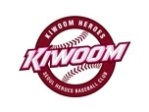
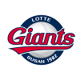

스포츠 소식
많이 본 스포츠 뉴스
- 1승보다 사람을 더 중요시 했던 롯데의 선택
- ESPN. 이제 롯데를 존중해야 할 시기
- 어떻게 2주만에 시작하지? 일본 언론. KBO리그 개막 비결조명
- KIA 윌리엄스 감독이 한국으로 온 이유
- KIA 볼펜 하준영. 13일 팔꿈치 수술 '시즌 아웃'
키워드로 모아보는 뉴스
스포츠 조선 속보
- 오리온과 이대성, FA계약 위한 최종협상 돌입

-
이대성과 오리온이 최종협상을 시작했다. 오리온과 이대성은 13일 오후 FA계약을 위한 최종협상에 돌입한다. 이미 이대성은 KT와 최종협상이
5월 야구 경기순위
| 순위 |
팀 |
경기 |
승 |
무 |
패 |
승률 |
게임차 |
승패 |
| 1 |

키움
|
7 |
6 |
0 |
1 |
0.857 |
0.0 |
4승 |
| 2 |
NC
|
6 |
5 |
0 |
1 |
0.833 |
0.5 |
1승 |
| 3 |

롯데
|
6 |
5 |
0 |
1 |
0.833 |
0.5 |
1패 |